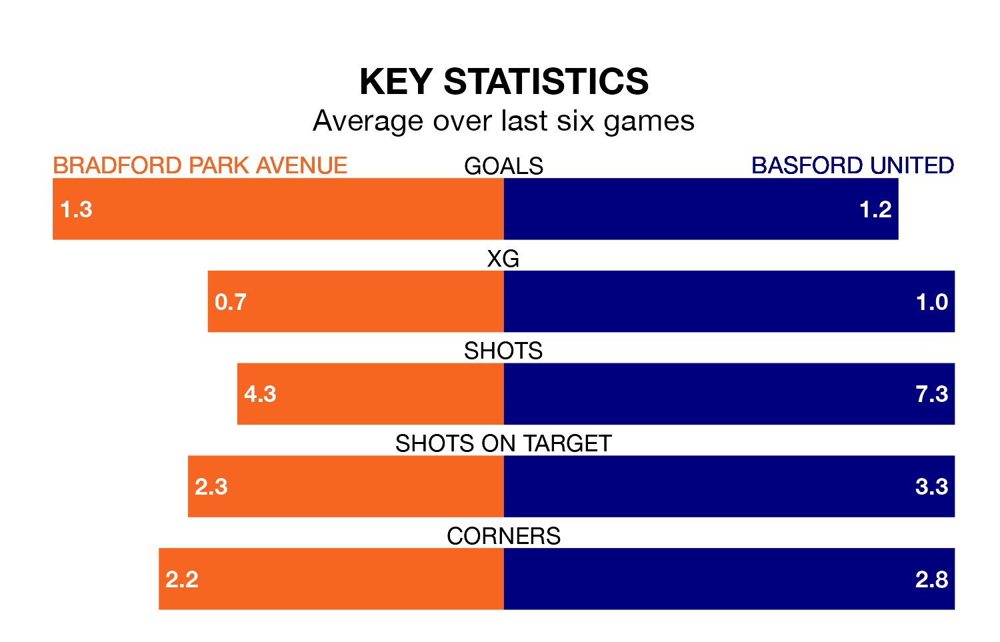

Bradford Park Avenue face Basford United at the Horsfall Stadium on Saturday looking to secure a first win in six Northern Premier League games.
Bradford Park Avenue have lost three and drawn two matches since they last earned three points – against Stafford Rangers on March 2.
They face a Basford side who have won three and lost two over that time.
Bradford Park Avenue are 20th in the table after 38 games, of which they have won six and drawn eight, earning 26 points.
Basford are two places ahead of the home team in 18th, with eight wins and nine draws putting them on 33 points.
With 37 goals in 37 games so far this season, United are the league's third-lowest scorers with 1.0 goals per game. And they are conceding at an average rate, letting in 60 goals at a rate of 1.6 per game.
Bradford Park Avenue are also below average scorers, with 1.1 goals per game, compared to a league average of 1.6. They have conceded 2.0 goals per game.
Bradford Park Avenue's last match was on Monday, a 3-2 loss against Radcliffe Borough.
Basford beat Worksop Town 3-1 last time out, also on Monday.
Updated: 16:41 (UTC), 04/04/24